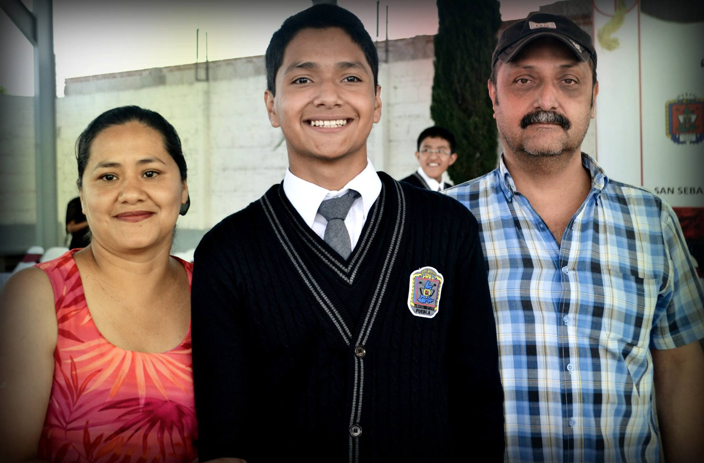
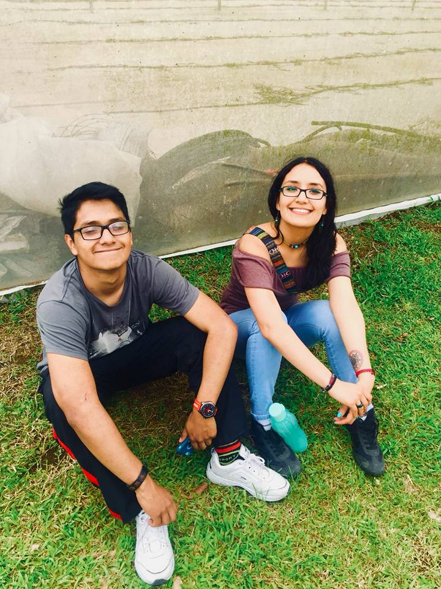
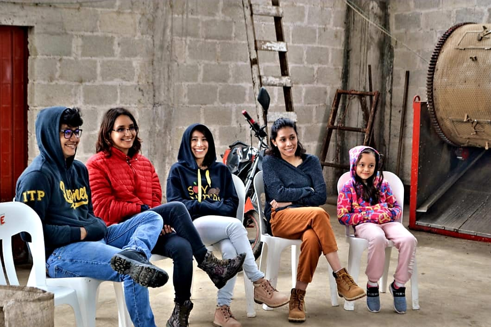

Papás: Son pareja desde temprana edad, se conocieron ya que en donde vivián, era un pueblo bastante pequeño en donde todos se conocían. Como a todos, mis papás forman una parte importante en mi vida, ya que gracias a ellos, puedo decir que nunca me a faltado absolutamente nada, ellos siempre vieron por mi hermana y por mi antes que ellos, por eso mismo les debo muchisimo. |
 |
Hermana: Mi hermana, que es tocaya de mi mamá, se llama Lizeth Eliud Domínguez Villa y claro, es una persona importante en mi vida. Aunque siempre tengamos diferencias como hermanos, daría lo que fuera por ver siempre bien a mi hermanita. Ella es mayor que yo por 8 años, a lo largo de mi crecimiento fue un factor importante en como desarrolle mis gustos, forma de pensar y hasta creencias. Actualmente es Licenciada en Danza, egresada de la BUAP, ejerciendo como maestra en distintas escuelas, mi hermana es un buen ejemplo a seguir. |
 |
Otra parte de mi familia: Sinceramente, no somos muy unidos a mi demás familia, por eso dividi esta sección del sitio web en amigos y mi pareja, que para mi son familia. Pero no nos aislamos de todos los miembros en mi familia, mis primas por ejemplo, siempre es muy divertido convivir con ellas y son unas personas maravillosas. Lo que nos mantiene distanciados es que viven en otro estado, pero siempre que coincidimos en algún lugar, todo se vuelve un ambiente bastante seguro. |
 |